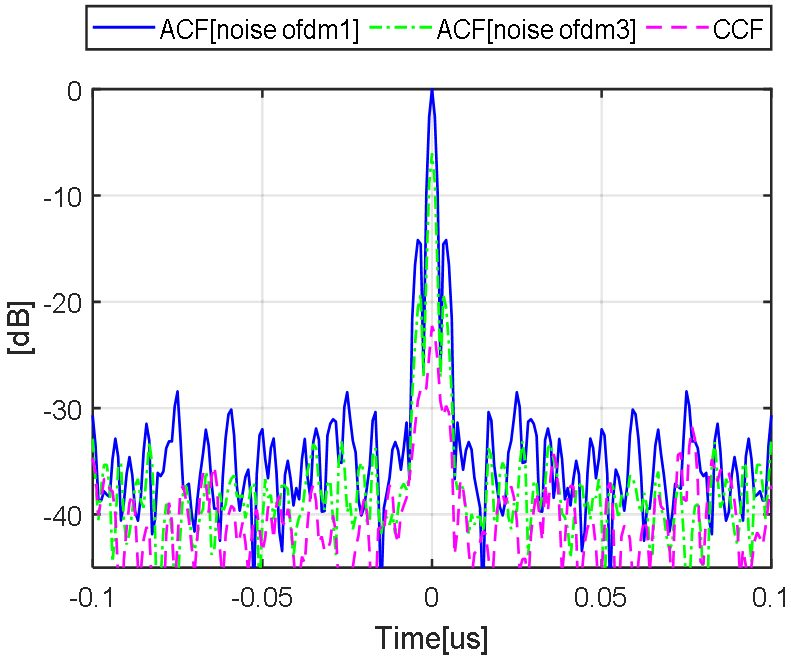

연구실적 · 국내전문학술지
광역 MIMO SAR 영상 획득을 위한 다중 잡음 OFDM 파형 활용 연구
Multiple Noise OFDM Waveforms for Wide Swath MIMO SAR

초록
Wide-swath, high-resolution satellite SAR suffers from azimuth and range ambiguities that degrade image quality. MIMO SAR with waveform groups of low cross-correlation is proposed to extend the observation swath while maintaining image quality. Noisy OFDM waveforms are developed to reduce ambiguity problems and suppress quality degradation, and SAR simulations evaluate the performance of the proposed technique for wide-swath imaging.
인용
문민정, 송경민, 이우경, 유상범, 이현철, 이상규, “광역 MIMO SAR 영상 획득을 위한 다중 잡음 OFDM 파형 활용 연구”, 한국전자파학회논문지, 제29권 6호, 2018년 6월
BibTeX
@article{Moon_2018,
title={Multiple Noise OFDM Waveforms for Wide Swath MIMO SAR},
volume={29},
ISSN={2288-226X},
url={http://dx.doi.org/10.5515/KJKIEES.2018.29.6.464},
DOI={10.5515/kjkiees.2018.29.6.464},
number={6},
journal={The Journal of Korean Institute of Electromagnetic Engineering and Science},
publisher={Korean Institute of Electromagnetic Engineering and Science},
author={Moon, Minjung and Song, Kyungmin and Lee, Wookyung and Ryu, Sang-Burm and Lee, Hyeon-Cheol and Lee, Sang-Gyu},
year={2018},
month=June,
pages={464–472}
}